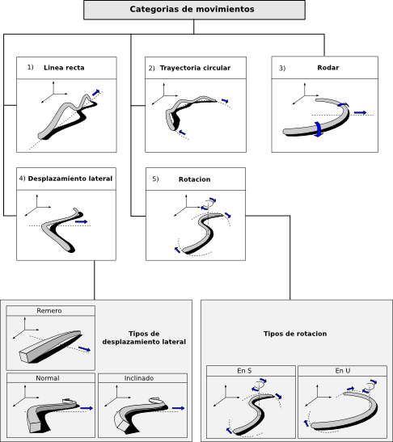

Sigo trabajando a saco en la tesis. Su estado, a 1 de Agosto es:
Título: “Robótica Modular y Locomoción: Aplicación a Robots Ápodos”
Prólogo.
Por Dave Calkins, Presidente de la Sociedad de Robótica de América y fundador de ROBOlympics.
Capítulo 1: Introducción (Pendiente)
Capítulo 2:
Encuadre científico-tecnológico.
Estado del arte en robótica modular y dónde encaja esta tesis.
Capítulo 3:
Modelos.
Presentación y descripción de los modelos de control, cinemáticos y matemáticos usados
para la locomoción de los robots Ápodos modulares.
Capítulo 4:
Locomoción en 1D.
Estudio de la locomoción de los robots Ápodos en una dimensión.
Capítulo 5:
Locomoción en 2D. Estudio de la locomoción en dos dimensiones.
Capítulo 6: Configuraciones mínimas (al 60%).
Capítulo 7: Experimentos (al 60%)
Capítulo 8: Conclusiones (pendiente)
Capítulo 9: Trabajos futuros. (pendiente)
Referencias
Todavía tengo que finalizar los capítulos 6 y 7, hacer la introducción, conclusiones y trabajos futuros ,
y finalizar los apéndices. Voy a tener un mes de Agosto bastante ocupado.
Obijuan